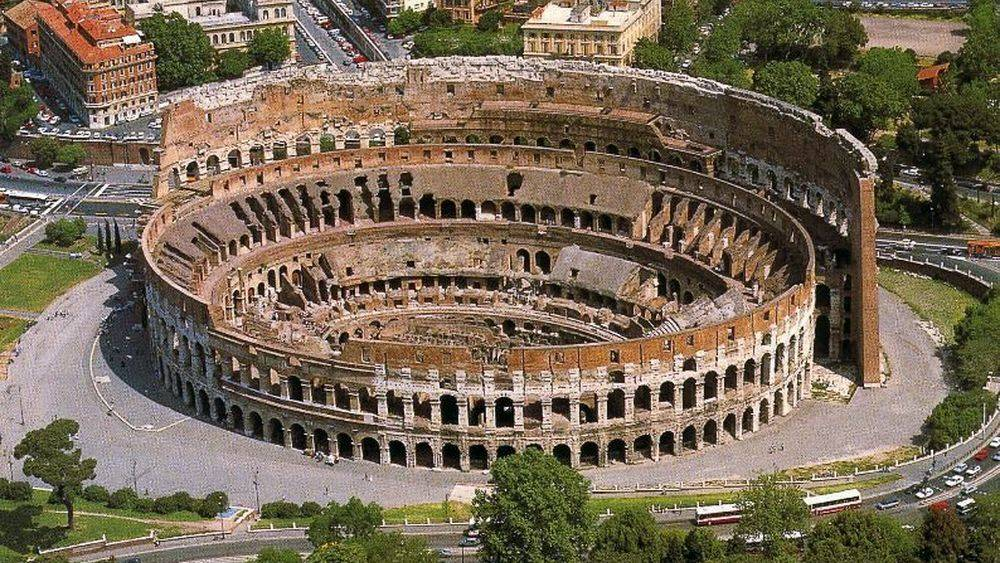
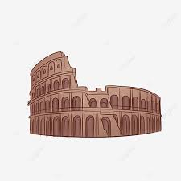
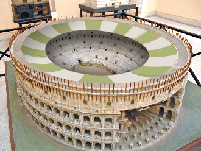
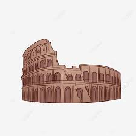
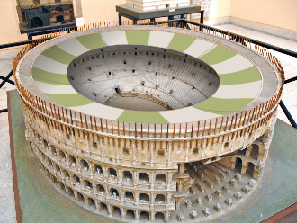

Le Colisée , (Colosseo en italien) à l'origine amphithéâtre Flavien (amphitheatrum Flavium en latin), est un immense amphithéâtre ovoïde situé dans le centre de la ville de Rome, entre l'Esquilin et le Cælius, le plus grand jamais construit dans l'Empire romain. Il est l'une des plus grandes œuvres de l'architecture et de l'ingénierie romaines. Sa construction, juste à l'est du Forum Romain, a commencé entre 70 et 72 apr. J.-C., sous l'empereur Vespasien, et s'est achevée en 80 sous Titus. D'autres modifications ont ensuite été apportées au cours du règne de Domitien (81-96)1. Le nom d'amphithéâtre Flavien dérive du nom de famille (gens Flavii) de l'empereur Vespasien et ses fils Titus et Domitien. Le Colisée est actuellement en état de ruine, en raison des dommages causés par les tremblements de terre et la récupération des pierres, mais il continue à donner la mesure de l'ancienne puissance de la Rome Impériale. Aujourd'hui, il est l'un des symboles de la Rome moderne, une de ses attractions touristiques les plus populaires avec 7,6 millions de visiteurs, et a encore des liens étroits avec l'Église catholique romaine : chaque Vendredi saint, le pape mène une procession aux flambeaux sur un chemin de croix aboutissant à l'amphithéâtre. Le Colisée est représenté sur la pièce de monnaie italienne de 5 centimes d'euro.


.jfif)

{kind=link}
Nom
Le nom latin initial du Colisée était amphitheatrum Flavium (en français « amphithéâtre Flavien »). Le monument a été construit par les empereurs de la dynastie Flavienne pour offrir aux citoyens des spectacles, d'où son nom d'origine3. Ce nom est encore fréquemment utilisé dans les ouvrages spécialisés, mais il est peu connu du grand public. Dans l'Antiquité, les Romains ont parfois évoqué le Colisée sous le nom d'Amphitheatrum Caesareum, dans un contexte poétique4,5. Le nom de Colosseum (du bas latin colossus qui vient lui-même du grec κολοσσός, « colosse, grande statue6 ») est probablement7 dérivé de celui d'une statue colossale de Néron érigée à proximité1 et initialement ornant l'entrée de la Domus aurea8. Alors que le palais impérial a été démantelé après la mort de Néron frappé de damnatio memoriae, cette statue a été remodelée par les successeurs de l'empereur en une figure d'Hélios (Sol ou Apollon), dieu du soleil, par l'ajout de la couronne solaire. La tête de Néron a été remplacée à plusieurs reprises par celles de divers empereurs. En dépit de ses liens païens, la statue est restée debout une bonne partie de l'époque médiévale, et était créditée de pouvoirs magiques[réf. nécessaire]. Elle fut finalement considérée comme un symbole iconique de la permanence de Rome9. Au viiie siècle, Bède le Vénérable (ca. 672-735) écrivit une célèbre épigramme célébrant la signification symbolique de la statue : Quandiu stabit coliseus, stabit et Roma ; quando cadet coliseus, cadet et Roma ; quando cadet Roma, cadet et mundus (« Tant que durera le Colosse, Rome durera ; quand le Colosse tombera, Rome tombera ; quand Rome tombera, le monde tombera »)10. Ceci est souvent mal traduit, en se référant au Colisée plutôt qu'au colosse (par exemple, dans le fameux poème de Byron Childe Harold's Pilgrimage) : à l'époque de Bède, le nom masculin coliseus était appliqué à la statue plutôt qu'à ce qui était encore connu sous le nom d'amphithéâtre Flavien. Le colosse de Néron a fini par tomber, probablement jeté bas en vue de la réutilisation de ses éléments de bronze. Le nom de Colosseum (nom neutre) a été utilisé vers l'an 1000, pour désigner l'amphithéâtre. La statue elle-même a été en grande partie oubliée, et seule sa base survécut, entre le Colisée et le Temple de Vénus et de Rome tout proche11. Le nom a été corrompu en Coliseum au cours du Moyen Âge. En Italie, l'amphithéâtre est toujours connu sous le nom de il Colosseo, et d'autres langues romanes en sont venues à utiliser des formes similaires, telles que le Colisée en français, el Coliseo en espagnol, o Coliseu en portugais ou Colosseumul en roumain. Colisée est devenu un nom commun, synonyme d'amphithéâtre et arènes : colisée d'El Jem, colisée de Pula, colisée de Vérone...
ARCHITECTURE
Contrairement aux amphithéâtres antérieurs construits entre deux collines, le Colisée est une structure autonome. Il est de plan ovoïde (courbe polycentrique très proche d'une ellipse)29, orienté OSO-ENE, de 189 m de long et 156 m de largeur, avec une superficie de 2,4 ha. La hauteur de la paroi extérieure est de 48 m. Le périmètre d'origine mesure 545 m. L'arène centrale est un ovale de 86 m de long et 54 m de largeur, entouré par un mur de 4,5 m de hauteur, qui s'élève jusqu'au niveau des premiers gradins30. Près de 100,000 m3 de travertin (dont 45 000 pour la paroi extérieure en opus quadratum), montés sans mortier, mais solidarisés par 300 t d'agrafes de fer, ont été utilisés11. Cette roche, issue d'une carrière près de Tibur, fut transportée au Colisée par une route spécialement aménagée à cet effet. Une quantité similaire de blocs de tuf, de briques et de béton en opus caementicium ont également été employés afin d'adapter la résistance des matériaux aux charges et poussées selon les structures (principaux piliers en travertin, murs radiaux en travertin et tuf, voûtes en briques de béton, plus léger que la pierre et plus solide que le mortier traditionnel)31. Cependant, l'ensemble de la structure a subi d'importants dommages au cours des siècles, avec de larges segments effondrés à la suite de tremblements de terre. Le côté nord du mur d'enceinte est toujours debout ; les rampes de brique à chaque extrémité ont été ajoutées au xixe siècle pour consolider le mur. Le reste de l'actuel extérieur du Colisée est en fait le mur intérieur d'origine. Le bâtiment repose sur une base de deux marches. La partie survivante de la paroi extérieure de la façade monumentale se compose de trois niveaux d'arcades superposés, surmontés d'une plate-forme sur laquelle se dresse un attique de grande hauteur, percé de fenêtres à intervalles réguliers. Seulement 31 arcs de l'anneau extérieur, numérotés de XXIII à LIV, sont restés intacts. Les 80 arcades de chaque niveau sont respectivement encadrées de demi-colonnes de style dorico-toscan (style spécifiquement romain), ionique et corinthien, tandis que l'attique est orné de pilastres composites32, les styles de ces trois niveaux devenant l'archétype des amphithéâtres romains postérieurs33. Les arcs au rez-de-chaussée font 7,05 m de hauteur pour 4,20 m de largeur. Les arcs aux premier et deuxième étages, qui ne font que 6,45 m de hauteur, étaient ornés de 160 statues en bronze doré hautes de cinq mètres probablement en l'honneur des divinités et des autres personnages de la mythologie classique, tandis que 40 boucliers en bronze ajoutés par Titus rythmaient l'attique et symbolisaient les conquêtes militaires romaines avec le bouclier pris à l'ennemi. Il est possible que les boucliers soient un rappel de ce décor déjà employé dans la basilique Æmilia34. La construction est favorisée par la répétition d'un motif architectural, le fornix (travée formée d'une arcade et de deux piliers, répétée 80 fois pour constituer le périmètre et trois fois pour l'élévation) rappelant la prostitution qui se déroulait sous ces arcades35. Deux cent quarante mâts d'une vingtaine de mètres de hauteur étaient dressés en encorbellement autour du sommet de l'attique. Ils soutenaient un vaste auvent rétractable, connu sous le nom de velum ou velarium (toile de lin ou de chanvre qui pouvait être colorée pour donner des ambiances particulières), qui abritait les spectateurs du soleil. C'était une immense toile soutenue par un anneau de cordes en filet, avec un trou au centre, entouré d’un anneau de fort cordage (du chanvre de 80 mm de diamètre environ) p1. Il couvrait deux tiers de l'arène, en pente vers le centre pour capter le vent et en diriger une brise vers les spectateurs. Des esclaves et marins, spécialement enrôlés au siège de la marine à Misène et basés à la proche caserne du Castra Misenatium, étaient chargés de la manœuvre du velarium36. À noter que des esclaves, armés de vaporisateurs, envoyaient des brumes rafraîchissantes et parfumées (les spartiones37) sur les notabilités. Des projections de suaves effluves (eau mêlée de safran ou de baume) par des pompes à piston pouvaient avoir lieu avant le spectacle. Pour neutraliser l'odeur des bêtes et les relents d'écurie, des brûle-parfums étaient répartis dans l'amphithéâtre38. Le Colisée était entouré d'une place de 17,5 m de large pavée de travertin et délimité par les bornes fixées39 dans le sol dont la fonction est discutée (ancrage des cordes de rappel du velarium, portes pour filtrer et réguler les accès au monument)40. Les jours de spectacle, cette place regorgeait de colporteurs et de pickpockets41. L'énorme capacité du Colisée rendait indispensable un dispositif d'accès et d'évacuation rapide, pour lequel les architectes mirent au point des solutions similaires à celles que nous connaissons dans nos stades modernes. Quatre-vingts entrées s'ouvraient sur l'extérieur au rez-de-chaussée, dont soixante-seize, numérotées (de même que chaque escalier) étaient destinées aux spectateurs ordinaires1. Des grilles sous chaque arc (il ne reste plus que leurs gonds dans le mur) permettaient de réguler le flot de spectateurs. La porte principale nord-ouest (appelée « porta triumphalis » ou « porte de la vie ») était l'entrée principale réservée à la parade inaugurale des gladiateurs et à la sortie des combattants vainqueurs, la porte sud-est (la « porta libitinensis » ou « porte de la mort »)42 pour emmener les mortellement blessés au spoliarium alors que les deux autres entrées axiales étaient destinées à l'élite (porte sud-ouest empruntée par l'empereur et ses proches, par les sénateurs et les vestales ; porte nord-est par les magistrats et riches patriciens)43. Les quatre entrées axiales étaient richement décorées de peintures et de reliefs en stuc, dont des fragments nous sont parvenus. Le « passage de Commode » (passage secret du nom de l’empereur qui, selon les sources historiques, y subit un attentat)44 qui reliait la loge impériale méridionale à l'extérieur (probablement un palais) est le témoin de ce riche décor. Bon nombre des entrées originales extérieures ont disparu avec l'effondrement du mur extérieur, mais les entrées XXIII à LIV survivent encore. Tout l'édifice était probablement peint11. Les spectateurs recevaient des billets sous forme de fragments de poterie numérotés (jeton d'entrée, ou tessera, distribué gratuitement la veille45) qui leur donnaient les instructions nécessaires de section et de rangée de sièges. Ils accédaient à leurs places par des vomitoria qui s'ouvraient sur les gradins, le public étant installé en une heure. Dès la fin des jeux ou en cas d'urgence, l'évacuation ne prenait que quelques minutes
Rôle du Colisée
Le Colisée a été utilisé pour accueillir des combats de gladiateurs et d'autres jeux très variés. Le matin, après un tour initial sur l’arène de tous les participants pour se présenter au public (la pompa gladiatoria), avait lieu un type de spectacle très populaire : la chasse aux animaux sauvages, ou venatio, qui faisait appel à une grande variété de bêtes sauvages, principalement importées d'Afrique, telles que rhinocéros, hippopotames, éléphants, girafes, lions, panthères, crocodiles, gnous et autruches. Des batailles et des chasses étaient souvent mises en scène parmi des décors comprenant des arbres et des bâtiments. Pendant l’après-midi se déroulaient les spectacles appelés munera qui ont toujours été donnés par des individus (appelés munerarii ou editores) plutôt que par l'État. Ils avaient une forte connotation religieuse, mais démontraient aussi la puissance et le prestige de la famille, auprès de la population qui les appréciait immensément61. Ces fêtes prenaient parfois une ampleur exceptionnelle : il est rapporté que Trajan, en 107, a fêté ses victoires sur les Daces par des jeux impliquant 11 000 animaux et 10 000 gladiateurs, durant 123 jours. Les écrivains anciens rapportent que le Colisée a vu se dérouler, dès les premiers jours (et avant la construction de l'hypogée), des naumachies, plus communément appelées navalia proelia (reconstitutions et mise-en-scène de combats navals avec de vrais morts). Il est consigné dans les comptes des jeux inauguraux offerts en 80 par Titus que l'arène remplie d'eau a alors accueilli des courses de chevaux et de taureaux spécialement entraînés à nager. Il est également fait état de la reconstitution d'une très fameuse bataille navale entre les Grecs de Corfou et de Corinthe. Cela a fait l'objet d'un débat entre les historiens, bien que l'approvisionnement en eau n'eût pas été un problème, de savoir comment on avait pu rendre l'arène suffisamment étanche et trouver assez d'espace pour y faire évoluer des navires de guerre. On peut penser que ces grands spectacles navals avaient lieu dans le volume vide occupé par la suite par l'hypogée, tel que nous le voyons encore aujourd'hui11. Des sylvae ou recréations champêtres ont également eu leur place dans les Jeux de l'amphithéâtre. Des peintres, techniciens et architectes s'appliquaient à reconstituer toute une forêt, avec de vrais arbres et arbustes plantés dans le sable de l'arène. Cette forêt apparaissait progressivement peuplée d'animaux introduits tour à tour pour le plus grand plaisir de la foule. Ces scènes pouvaient simplement montrer à la population urbaine les scènes de la nature sauvage, ou bien devenir la toile de fond de chasses ou de scènes illustrant des épisodes de la mythologie. Pendant l'intervalle du déjeuner, sur l'arène on exécutait des condamnations à mort. Lors de l'exposition aux bêtes, la damnatio ad bestias, le condamné était généralement lié à un poteau et poussé vers les bêtes. Occasionnellement, les décors ont pu être utilisés pour des exécutions dans lesquelles le héros de l'histoire - joué par un malheureux condamné - était tué de la façon dont le relataient les récits mythologiques -, dévoré par des fauves ou d'une autre façon62. Cette partie du spectacle était la moins prisée, de nombreux spectateurs en profitant pour s'alimenter ou se rafraîchir à la cinquantaine de fontaines disposées dans le Colisée
{kind=link}